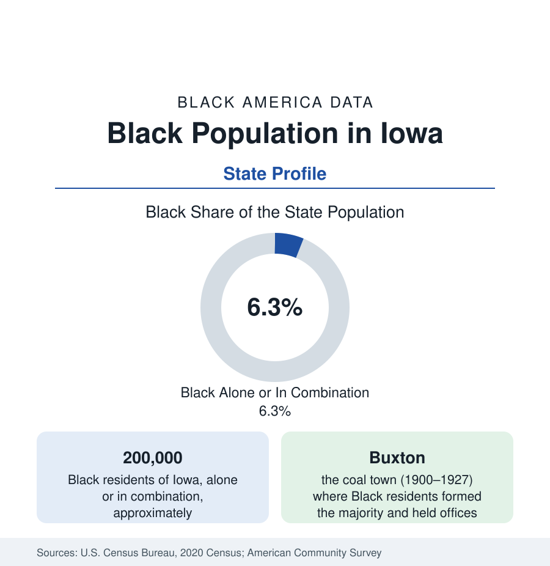

Black Census
Black Population in Iowa: Buxton's Ghost and the Packing Towns
About 200,000 Black Iowans — one in sixteen residents — in a state that once held the Midwest's most famous integrated coal town. The census profile.

Iowa holds about 200,000 Black residents — Black alone or in combination — roughly one in sixteen of its people, with Black alone at about 131,000, or 4.1 percent. Iowa's Black population is the product of two industries — coal in its founding era, meatpacking in its modern growth — plus the Des Moines government-and-insurance economy, and its history holds one of the most remarkable communities in the Midwest's record: Buxton, the company coal town where Black residents were the majority and integration was the working order a century ago. This article profiles the population.
Buxton and the Coal Layer
From 1900 to the mid-1920s, the Consolidation Coal Company's town of Buxton, in Monroe County, held a population in the thousands — a majority of them Black, recruited from the Virginia and Kentucky fields — in a community whose Black residents served as mayor's appointees, council members, doctors, lawyers, and store owners, educated their children in integrated schools, and drew national attention as a working refutation of the era's assumptions. When the mines played out, Buxton dispersed (its site is now an archaeological and heritage landscape) and its people seeded Black Iowa — Des Moines above all, and the coal and rail towns of the south. The modern southern-Iowa layer (Ottumwa, Centerville's region, the old coal counties) is Buxton's diaspora at village scale.
The Modern Map: Des Moines, Waterloo, the Packing Towns
Des Moines holds the largest community: the city is roughly a ninth Black (some 23,000 to 25,000 residents) with a metro Black population in the range of 45,000 to 55,000, built on the insurance-and-government economy and centered historically in the Center Street district (the city's Black business spine, largely cleared in the freeway era) and the north-side neighborhoods. Waterloo, the farm-machinery city, is the profile's second center and its most distinctive: roughly a sixth to a fifth Black — one of the highest shares of any Iowa city — a community built by the Illinois Central's shops and the Rath packing plant, concentrated on the city's east side across the Cedar River in one of the state's starkest intra-city divides. The modern meatpacking map adds the growth: Sioux City, Council Bluffs, Marshalltown, Denison, Postville, and Storm Lake record Black and African populations built by plant recruitment since the 1990s, layered with larger Latino and refugee communities — the packing corridor is where Black Iowa's numbers now move.
Composition and Indicators
Iowa's Black indicators follow the northern-plains pattern with the packing towns' asterisk: state-level medians mid-pack for the Midwest (attainment through the regents universities, homeownership in the smaller cities comparatively strong), against Waterloo's east-side tracts and the packing towns' wage data at the difficult end. The composition is predominantly native-born in the old communities, with significant African refugee populations (Sudanese, Congolese, Somali, and Liberian communities in Des Moines and the packing towns are among the interior's larger per-capita resettlement populations) reshaping the school data of the capital. The state has no HBCU; the Black church and the Des Moines institutions carry the civic layer.
Change and the Estimates
The estimates show Iowa's Black population among the faster-growing in percentage terms in the Midwest — from a small base — with Des Moines' suburbs, the university towns, and the packing corridors gaining and the old coal counties' remnants shrinking. Each census lifts the share by a few tenths, the plains pattern, with the metro concentration (Des Moines and Waterloo holding roughly half the state's Black population between them) increasing as the small towns thin.
Reading the Iowa Numbers
The University Towns and the Capital's Institutions
Iowa City and Ames hold the university-shaped communities of the state's pattern — small shares, high attainment, in the college-town profile of Madison and Lawrence — while Des Moines' institutional layer (Drake University, the state's Black church network, the Iowa-Nebraska NAACP's historic state conference, and a Black press tradition running through the Iowa Bystander's long publication) anchors the capital's civic data. Cedar Rapids, the second city, records a growing Black population in the range of a tenth of its residents, built on the cereal and manufacturing economy of the 'City of Five Seasons.'
Iowa's profile holds the section's most poignant ratio of significance to size: the state that ran the Midwest's model integrated town in 1910 counts 200,000 Black residents today, their map drawn by the same extractive industries that drew Buxton's. The coal town is a ghost; the packing towns are its living successors, and the data connect them across exactly a century.
More in Black Census
The Black Population of the United States: Size, Definitions, and Distribution
The Black population of the United States totals 52.8 million — 15.4 percent of the nation. How the Census Bureau defines and counts the population, and where it lives.
Black Median Household Income in the United States
Black median household income stands at $56,490 in the Census Bureau's annual income report — how the figure is measured, how it compares, and what drives it.
The Black Poverty Rate: Levels, Children, and the Long Trend
The official Black poverty rate is 17.1 percent — against 11.1 percent nationally and 7.7 percent for non-Hispanic White Americans. How poverty is measured and what the data show.
Source: U.S. Census Bureau, 2020 Census; American Community Survey; Population Estimates Program.